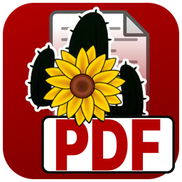
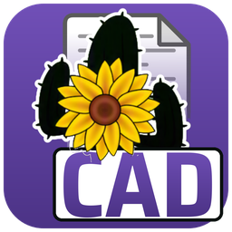
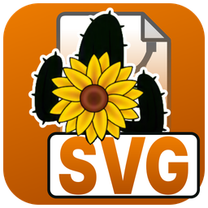

Press kit
For anyone writing about the Kanzonas apps: short descriptions, facts, logos and screenshots, free to use for that.
Kanzonas
Kanzonas is the one-person project of Keith Lyding, who has worked in industrial electrical and controls for 20 years. As AI got better, he tried having it write the apps he needed for his own work; they did everything he needed and more, so he shares them: KanzonasPDF, KanzonasCAD and KanzonasSVG, free, with their source code public. The name joins Kansas and Arizona, his wife's home state and his own. No accounts, no subscriptions and no telemetry: the apps never collect anything about the people who use them.
Because AI writes most of the code, every build is checked by machines: all automated tests and a self-test of the finished program before any release, batteries of thousands of random actions, speed limits, and a "slop check" for what careless or machine-written code leaves behind. How the apps are checked.
- Logo: Kanzonas (light background, PNG) · transparent PNG
- Contact: support@kanzonas.com



KanzonasPDFA free, open-source PDF editor with tools for drawings.
KanzonasPDF is a free, open-source PDF viewer and editor for Windows, Linux and Mac. It comments on, edits (text, pictures, shapes and their colors), fills in, signs, redacts and prints PDFs, recognizes text in scans, and, for people who work with drawings and plans, measures to scale, clouds revisions and compares sheets. A free alternative to Adobe Acrobat and Bluebeam Revu, with no account, no subscription and no watermarks.
- Windows, Linux and Mac (Apple silicon)
- Free and open source (AGPL-3.0)
- In English, Spanish and Italian
- Installer, portable zip and PortableApps.com package
- Website: pdf.kanzonas.com · Source code: github.com/keithlyding/KanzonasPDF
- Logo: KanzonasPDF (light background, PNG) · transparent PNG · App icon (PNG)
- Screenshots: on its page; click one to see it full size and save it.



KanzonasCADFree electrical CAD for people who know AutoCAD.
KanzonasCAD is a free electrical CAD program for Windows and Linux. It draws schematics and control panel layouts the AutoCAD way (command line, snaps, grips), with JIC/NFPA symbols, wires that route around symbols, wire numbers and cross-references that update themselves, a bill of materials and cable reports, and printing to paper or PDF; it opens DWG and DXF files. A free alternative to AutoCAD Electrical.
- Windows and Linux
- Free to use, at home and at work, including paid projects; source code public (PolyForm Shield 1.0.0); versions up to 0.20 under the MIT License
- Version 0.x: early, in active development
- Website: cad.kanzonas.com · Source code: github.com/keithlyding/KanzonasCAD
- Logo: KanzonasCAD (light background, PNG) · transparent PNG · App icon (PNG)
- Screenshots: on its page; click one to see it full size and save it.



KanzonasSVGTurn pictures into SVG files, on your own computer.
KanzonasSVG is a free, open-source program for Windows and Linux that turns pictures (logos, illustrations, drawings, scans) into SVG files. It picks the settings for each picture and keeps a logo's exact colors and sharp edges. Its tracing is Inkscape's Trace Bitmap with fixes that were offered back to Inkscape. Nothing is uploaded.
- Windows and Linux
- Free and open source (GPL-2.0 or later)
- Also a command line for many files at once
- Website: svg.kanzonas.com · Source code: github.com/keithlyding/KanzonasSVG
- Logo: KanzonasSVG (light background, PNG) · transparent PNG · App icon (PNG)
- Screenshots: on its page; click one to see it full size and save it.


Using the logos
Please use them as they are: don't change their colors or proportions, or add to them. The transparent versions are for light backgrounds only (the name is near black). For anything else, write to support@kanzonas.com.